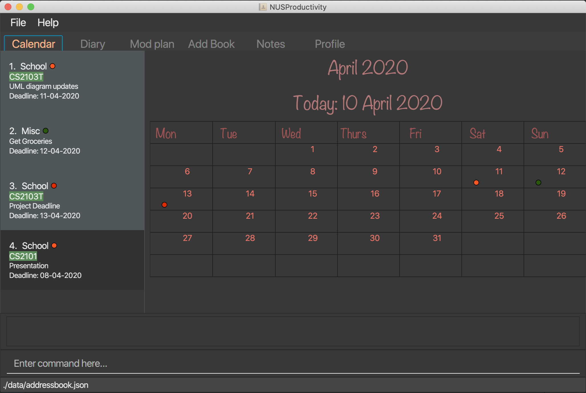

By: Team W16-4 Since: Mar 2020 Licence: MIT
1. Introduction
NusProductivity is an application for better management of your school work. The app will allow you to keep track of the modules you have taken, allow you to map your module out to plan for future modules. More importantly, NusProductivity is optimized for those who prefer to work with a Command Line Interface (CLI) while still having the benefits of a Graphical User Interface (GUI).
2. Quick Start
-
Ensure you have Java
11or above installed in your Computer. -
Download the latest
NUSProductivity.jarhere. -
Copy the file to the folder you want to use as the home folder for NUSProductivity.
-
Double-click the file to start the app. The GUI should appear in a few seconds.
 -
Type the command in the command box and press Enter to execute it.
e.g. typinghelpand pressing Enter will open the help window. -
Some example commands you can try:
-
list: lists all contacts -
addn/John Doe p/98765432 e/johnd@example.com ` : adds a contact named `John Doeto the Address Book. -
delete3: deletes the 3rd contact shown in the current list -
exit: exits the app
-
-
Refer to Section 3, “Features” for details of each command.
3. Features
Command Format
-
Words in
UPPER_CASEare the parameters to be supplied by the user e.g. inadd n/NAME,NAMEis a parameter which can be used asadd n/John Doe. -
Items in square brackets are optional e.g
n/NAME [t/TAG]can be used asn/John Doe t/friendor asn/John Doe. -
Items with
… after them can be used multiple times including zero times e.g.[t/TAG]…can be used ast/friend,t/friend t/familyetc. -
Parameters can be in any order e.g. if the command specifies
n/NAME p/PHONE_NUMBER,p/PHONE_NUMBER n/NAMEis also acceptable.
3.1. General
3.1.1. Viewing help : help
-
Format:
help
3.1.2. Exiting the program : exit
-
Exits the program.
-
Format:
exit
3.2. Address Book
3.2.1. Adding a person: add
-
Adds a person to the address book.
-
Format:
add n/NAME p/PHONE_NUMBER e/EMAIL [t/TAG]…
| A person can have any number of tags (including 0) |
-
Examples:
-
add n/John Doe p/98765432 e/johnd@example.com -
add n/Betsy Crowe t/friend e/betsycrowe@example.com p/1234567 t/criminal
-
3.2.2. Listing all persons : list
-
Shows a list of all persons in the address book.
-
Format:
list
3.2.3. Editing a person : edit
-
Edits an existing person in the address book.
-
Format:
contactEdit INDEX [n/NAME] [p/PHONE] [e/EMAIL] [t/TAG]…
-
Examples:
-
edit 1 p/91234567 e/johndoe@example.com
Edits the phone number and email address of the 1st person to be91234567andjohndoe@example.comrespectively. -
edit 2 n/Betsy Crower t/
Edits the name of the2nd personto beBetsy Crowerand clears all existing tags.
-
3.2.4. Locating persons by name: find
-
Finds persons whose names contain any of the given keywords.
-
Format:
find KEYWORD [MORE_KEYWORDS]
-
Examples:
-
find John
ReturnsjohnandJohn Doe -
find Betsy Tim John
Returns any person having namesBetsy,Tim, orJohn
-
3.2.5. Deleting a person : delete
-
Deletes the specified person from the address book.
-
Format:
delete INDEX
-
Examples:
-
list
delete 2
Deletes the 2nd person in the address book. -
find Betsy
delete 1
Deletes the 1st person in the results of the find command.
-
3.2.6. Clearing all entries : clear
-
Clears all entries from the address book.
-
Format:
clear
3.3. Profile
3.3.1. View CAP summary : cap
-
Shows the current cap of the individual. If only cap is specified, it will only show the MCs taken up to the point and the CAP.
-
Format:
cap BREAKDOWN
3.3.2. View module requirement: modreq
-
Shows the modules requirement for the major specified.
-
Format:
modreq MAJOR -
Example:
-
modreq computer science
-
3.3.3. Module information: module
-
Shows basic information about the module, such as time of lecture, tutorial, exam venues and professor’s contact associated with the module.
-
Format:
module MODULE CODE -
Example:
-
module CS2103T
-
3.3.4. Module planning: mymodplan
-
Shows list of modules taken/to be taken to fulfill major requirements.
-
Format:
-
mymodplan: shows module planning list -
mymodplan add MODULE CODE: adds a module to the module plan -
mymodplan done MODULE CODE: marks a module as taken/done
-
3.4. Diary
3.4.1. Adding an diary entry: diaryAdd
-
Adds a diary entry to the diary book.
-
Format:
diaryAdd ec/ENTRY_CONTENT
3.4.2. Showing diary logs: diaryShow
-
Shows all diary entry IDs.
-
Format: `diaryLog `
3.4.3. Showing diary entries with specified entry ID: diaryShow
-
Shows the diary entry for the specified entry ID.
-
Format:
diaryShow id/ENTRY_ID
3.4.4. Showing diary entries with specified date: diaryShow
-
Shows the diary entry at the specified date if there is any, date needs to be in DD-MM-YYYY.
-
Format:
diaryShow date/DATE
3.4.5. Deleting an diary entry: diaryDelete
-
Deletes the specified diary ID’s entry.
-
Format:
diaryDelete id/ENTRY_ID
3.4.6. Tagging weather: diaryWeather
-
Tags the diary with the specific ID with a specific weather (e.g. sunny, cloudy)
-
Format:
diaryWeather id/ENTRY_ID w/WEATHER
3.4.7. Tagging mood: diaryMood
-
Tags the diary with the specific ID with a specific mood (e.g. happy, stressed)
-
Format:
diaryMood id/ENTRY_ID m/MOOD
3.5. Calender
3.5.1. Todo list: todo
-
Shows the list of tasks that are scheduled for the week with the deadline.
-
Format:
todo
3.5.2. Deadline: deadline
-
Adds a new task to the todo list. The deadline will be shown alongside the task description.
-
Format:
deadline DESCRIPTION /by DD-MM-YYYY HHMM
3.5.3. Event: event
-
Adds a new task to the todo list. The date of the event will be shown alongside the task description.
-
Format:
-
event DESCRIPTION /at DD-MM-YYYY HHMM -
event ID NAME_OF_PARTICIPANT: add the contact card of the specific participant to the event
-
3.6. Notes
3.6.1. Note Taking: notes
-
Allows for users to create documents for notes, organise their notes in folders. Default location is set to user’s desktop.
-
Format: notes ops/COMMAND loc/DIRECTORY
-
notes ops/list loc/NUS/: shows content in usr/Desktop/NUS/ folder, content will be updated in the UI -
notes ops/open loc/test.doc: Opens the file test.doc at usr/Desktop, if file is not present, error message will be shown. -
notes ops/create loc/test.doc: Creates the file test.doc at usr/Desktop, if file is already present, error message will be shown.
-
4. Command Summary
-
add n/NAME p/PHONE_NUMBER e/EMAIL a/ADDRESS [t/TAG]…
e.g.add n/James Ho p/22224444 e/jamesho@example.com t/friend t/colleague -
clear : clear
-
delete : delete INDEX
e.g.delete 3 -
edit : edit INDEX [n/NAME] [p/PHONE_NUMBER] [e/EMAIL] [t/TAG]…
e.g.edit 2 n/James Lee e/jameslee@example.com -
find : find KEYWORD [MORE_KEYWORDS]
e.g.find James Jake -
list: list
-
cap : cap {breakdown}
-
modreq : modreq {\MAJOR}
e.g.modreq computer science -
todo: todo
-
help : help
-
diary :
-
diary log LIMIT
-
diary show ENTRY ID
-
diary show DD-MM-YYYY
-
diary add ENTRY
-
diary delete ENTRY ID
-
diary weather ID WEATHER
-
diary emotion ID EMOTION
-
reminders : reminders
-
deadline : deadline DESCRIPTION /by DD-MM-YYYY HHMM
-
event :
-
event DESCRIPTION /at DD-MM-YYYY HHMM
-
event ID NAME_OF_PARTICIPANT
-
mymodplan: mymodplan
-
mymodplan add MODULE CODE
-
mymodplan done MODULE CODE
-
-
notes : notes
-
notes ops/open loc/DIRECTORY
-
notes ops/create loc/DIRECTORY
-
notes ops/list loc/DIRECTORY
-
-